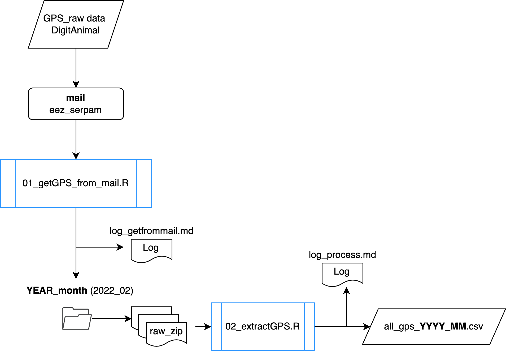
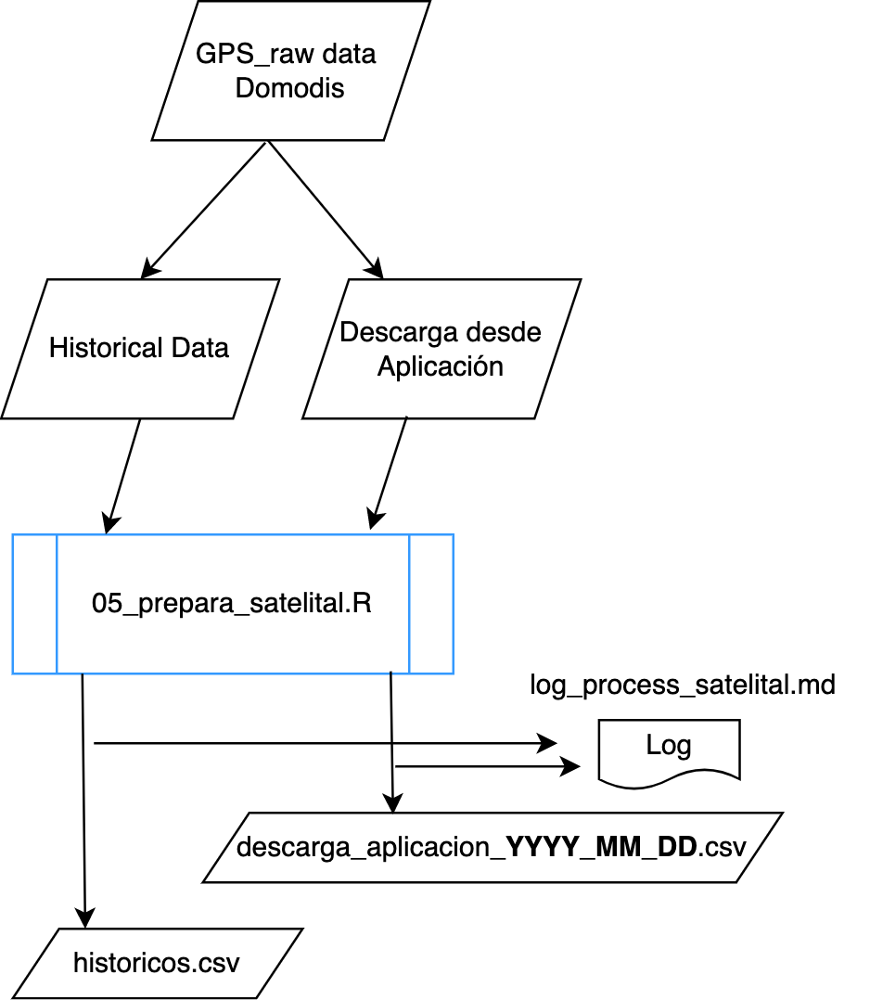

Colecta de datos
Colecta de datos
Tipología de datos
Usamos datos de posicionamiento GPS de diferentes dispositivos (categorías):
- GPS GSM (gsm): registran la posición en intervalos de 30 minutos, y envían la posición usando la tecnología GSM(Global System for Mobile communications).
- SIGFOX (sigfox): registran la posición en intervalos de 30 minutos, y envían la posición usando la tecnología SIGFOX.
- Medición Continua (mc): registran la posición en intervalos de 5 minutos, y guardan la información en una tarjeta SD. Los datos necesitan ser descargados manualmente
- Satelitales (sat): registran la posición en intervalos de 30 minutos, y envían la posición vía satélite a los servidores de una empresa (Domodis)
En función de la tipología de los dispositivos, se ha implementado un método de colecta de los datos.
Dispositivos con GSM y SIGFOX
El manejo de información de este tipo de dispositivos es gestionado por la empresa digitanimal, la cual tiene una API que permite la consulta de los datos. Asimismo, tienen desarrollada una aplicación https://digitanimalapp.com/v2/ que permite la visualización de los últimos datos.
Se ha consultado varias veces a la empresa para poder llevar a cabo una descarga de los datos vía API o similar, pero no nos han proporcionado acceso, por lo que el método de colecta de los datos consiste en el envío por parte de la empresa de varios correos electrónicos a principio de cada mes con los datos del mes anterior. Los correos se envian a la dirección: serpam@eez.csic.es.
Hemos desarrollado un script que colecta los datos del correo 01_getGPS_from_mail.R y posteriormente otro script (02_extractGPS.R) los extrae generando un archivo mensual con todos los datos de los dispositivos GPS. (Ver Figure 1)

Dispositivos satelitáles
El manejo de información de este tipo de dispositivos es gestionado por la empresa DOMODIS, la cual tiene una aplicación que permite la consulta de los datos. La descarga de datos es de forma manual (por años y por dispositivo). Se ha contactado con la empresa para conseguir una forma mas eficiente de descarga de los datos. No tienen una API desarrollada. Estamos a la espera de que nos proporcionen una forma mas eficiente de descarga de los datos.
Los datos descargados manualmente, se procesan mediante 05_prepara_satelital.R ( Figure 2), que formatea los datos y los prepara para su introducción en la base de datos.
